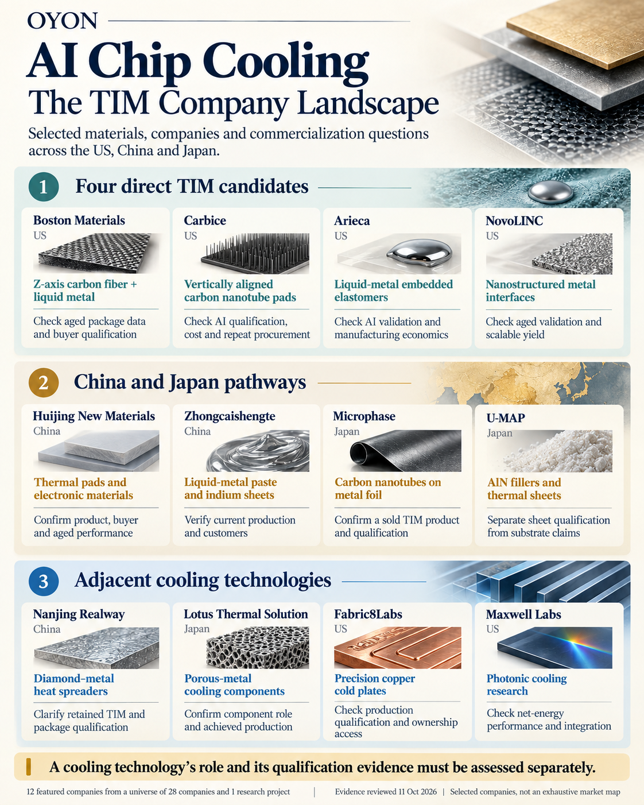
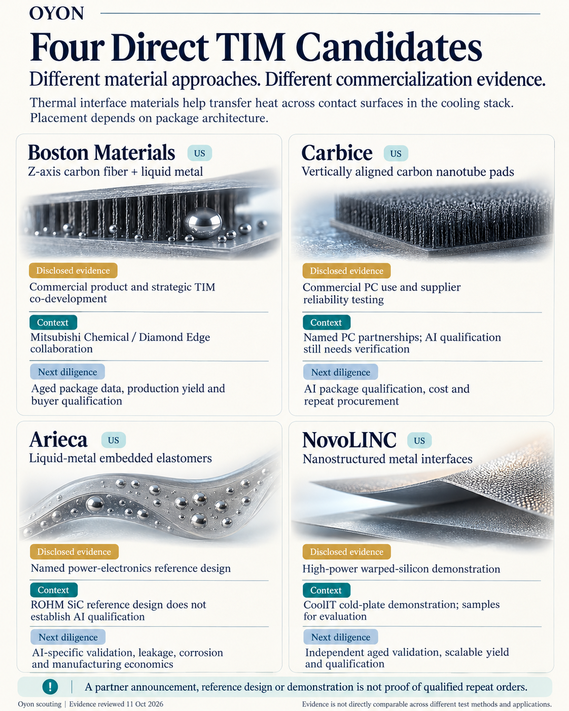

Back to Research & Perspectives
AI Chip Cooling: The TIM Company Landscape
Advanced thermal interface materials sit within a wider cooling ecosystem. This scouting map examines where selected companies fit, what their public evidence supports, and what buyers and investors still need to verify.
Where TIM fits in the cooling stack
Thermal interface materials (TIMs) help transfer heat across contact surfaces. In a conventional lidded package, interfaces can sit between the silicon and heat spreader, and between the heat spreader and cold plate. Direct-die systems can remove or combine these interfaces. The relevant material and qualification requirements therefore depend on package architecture.
The map separates direct TIM candidates from enabling materials and adjacent cooling technologies. A diamond–metal heat spreader, porous-metal cooling component or precision cold plate may address a related thermal problem while occupying a different position in the stack.
A company map across three markets


The four US direct TIM candidates remain the first priorities for further technical and commercial diligence. The China and Japan group spans thermal pads, liquid-metal interfaces, carbon nanotubes on metal foil, and AlN fillers and thermal sheets. These routes require product-level verification: a material platform or substrate production claim does not establish qualification of a finished TIM product.
The adjacent group broadens the cooling picture. Nanjing Realway focuses on diamond–metal heat spreaders; Lotus Thermal Solution on porous-metal components; Fabric8Labs on precision copper cold plates; and Maxwell Labs on photonic cooling research. Their progress should be evaluated against the requirements of their own products and buyers.
Four direct candidates, four evidence profiles


The strongest disclosed evidence differs by company and application. These findings support focused follow-up, but they do not establish a common performance ranking.
| Company | Material approach | Disclosed evidence | Next diligence |
|---|---|---|---|
| Boston Materials | Z-axis carbon fiber + liquid metal | Commercial product and strategic TIM co-development with Mitsubishi Chemical / Diamond Edge | Aged package data, production yield and buyer qualification |
| Carbice | Vertically aligned carbon nanotube pads | Commercial PC use and supplier reliability testing | AI package qualification, cost and repeat procurement |
| Arieca | Liquid-metal embedded elastomers | Named ROHM SiC power-electronics reference design | AI-specific validation, leakage, corrosion and manufacturing economics |
| NovoLINC | Nanostructured metal interfaces | High-power warped-silicon demonstration with a CoolIT cold plate; evaluation samples | Independent aged validation, scalable yield and qualification |
What matters for commercialization
A partnership, reference design or demonstration provides useful evidence, but each supports a different conclusion. Arieca’s power-electronics reference design does not establish AI qualification. NovoLINC’s demonstration does not establish production orders. Carbice’s commercial PC use leaves AI-specific qualification to be verified. Strategic co-development at Boston Materials leaves buyer qualification and manufacturing economics to be assessed.
The next diligence should connect the product to its application and buyer: comparable aged performance, repeatable manufacturing yield and cost, completed qualification, and paid repeat procurement. Historical funding and investor relationships also need separate checks for current ownership, funding status and access.
Oyon’s scouting lens is technology → application → buyer → evidence. It helps distinguish promising material routes from the evidence required to become qualified supply.